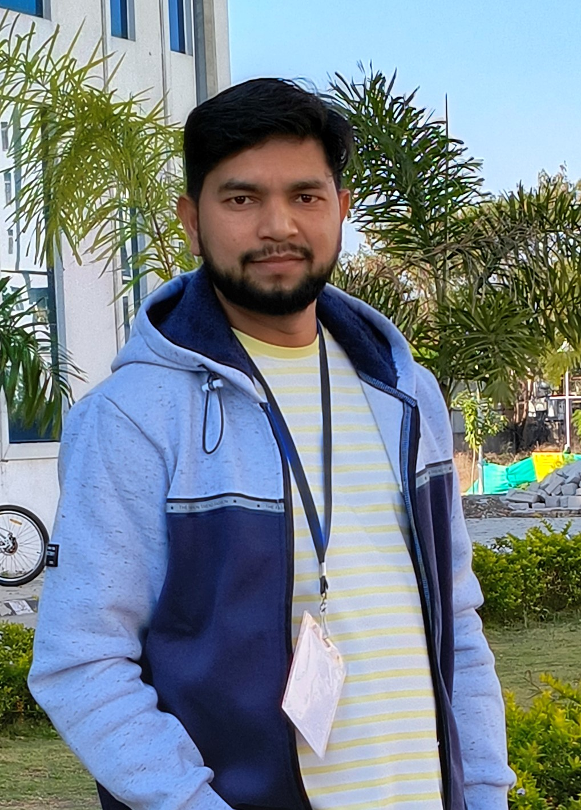

Post Doctoral Fellow
Statistics and Data Science
Indian Institute of Technology Kanpur
Kanpur, Uttar Pradesh-208016, India
I am currently working as an Institute Post Doctoral Fellow under the mentorship of Prof. Satya Prakash Singh in the Department of Statistics and Data Science at the Indian Institute of Technology Kanpur (IIT Kanpur), Kanpur, India. I received my Ph.D. in Statistics in 2025 from the Department of Mathematics and Statistics, Central University of Punjab, Bathinda, India, under the supervision of Prof. Ashok Kumar Pathak. Before that, I completed my Bachelor of Science (B.Sc.) and Master of Science (M.Sc.) from the University of Lucknow, Lucknow, India, in 2016 and 2018, respectively. Before joining IIT Kanpur, I worked as a Post Doctoral Associate in the NDMC, Department of Mathematics at Indian Institute of Technology Bombay (IIT Bombay), Mumbai, India, and as an Assistant Professor of Statistics at the Manipal Institute of Technology (MIT), Manipal Academy of Higher Education (MAHE), Manipal, Karnataka, India.
My research focuses on developing copula-based statistical methods for regression and path analysis. My work includes parametric, semi-parametric, and non-parametric regression estimation, robust statistical methods for handling outliers, and copula-based approaches for estimating direct and indirect effects in path models. I have also contributed to the development of new probability distributions and their applications in statistical modeling. My current research interests include robust estimation, dependence modeling, causal inference, and statistical diagnostics under challenging data conditions, such as outliers, heteroscedasticity, multicollinearity, and non-normality. For more details about my research, please visit my Google Scholar: Google Scholar | ORCID: 0009-0006-1273-0651 profiles.
Dr. Alam Ali
Lab No. 615,
Engineering Sciences Block-II
Indian Institute of Technology Kanpur
Kanpur, Uttar Pradesh 208016, India
Mobile: +91-7388779377
Email:
alamali@iitk.ac.in
|
alam2ali1996@gmail.com